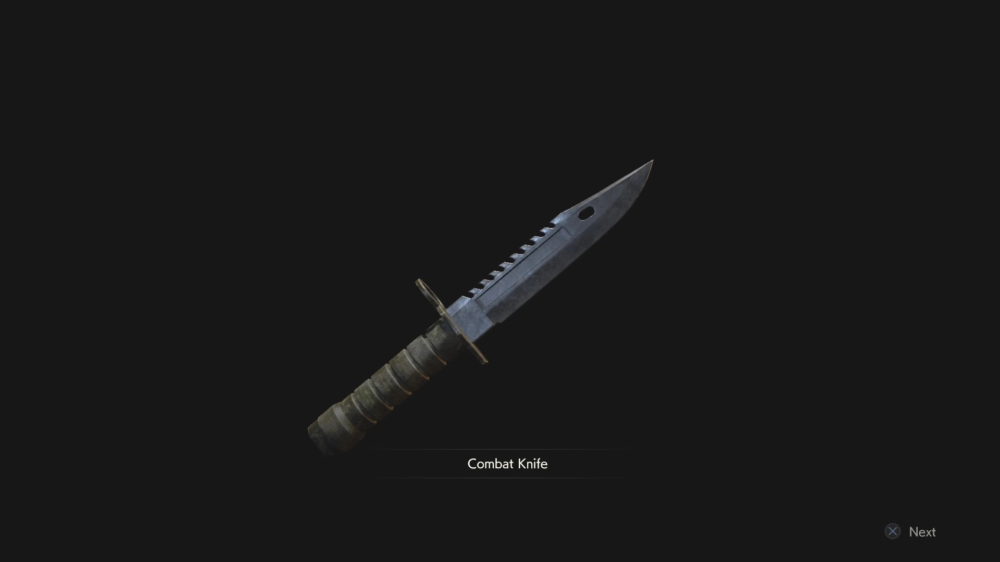
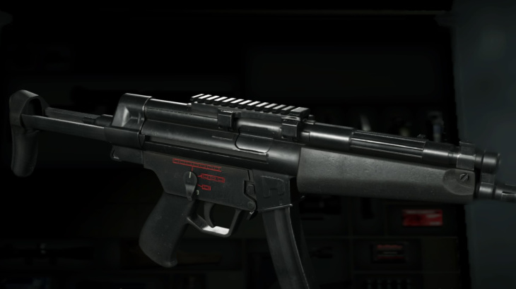
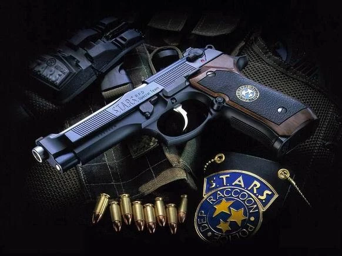

Bowgun
Because sometimes silence costs a bolt, not a bullet.
Perfect for narrow corridors and things that shouldn't hear you coming.
Load it, aim, and pray your hands don't shake.

Slow footsteps, dim flashlight, conserving every round.
These weapons are made for "don't let it hear you" moments.
Silent, brutal, and a test of nerve at close range.
Works well when you're out of ammo, out of hope, and out of options.
A classic that has saved more lives than it should have.

Because sometimes silence costs a bolt, not a bullet.
Perfect for narrow corridors and things that shouldn't hear you coming.
Load it, aim, and pray your hands don't shake.
Too many zombies. No time to think.
These are weapons for courage you didn't know you had.
Loud, messy, and devastatingly effective at point-blank range.
A shotgun blast doesn't just stop them — it rearranges them.
Great for hordes and doors that won't open politely.

The weapon that turns "one mag" into a lifestyle.
Best used by agents who will stop firing… (they won't).
Fast, chaotic, unreliable — like your survival instinct.

No drama. Always loaded.
Just something reliable while you exist in a collapsing world.
Draw. Aim. Fire.
A handgun doesn't ask questions and doesn't judge your aim.
It's the loyal companion of desperate evenings in Raccoon City.

Lightweight, precise, and slightly over-engineered for no reason.
A handgun for "I'm calm" people who are actually not calm.
Perfect for slow corridors and things that shouldn't see you sweat.

Cornered. Low on health. The save room is three rooms back.
Here's our arsenal for when you're completely out of options.
One shot. No reload. No mercy — for you or anything nearby.
The series' most iconic late-game gift, arriving just in time.
An excellent start — and ending — to your final confrontation.

Better to burn with the Captain than face it alone.
Set the world alight before it sets you down.
Because sometimes the only exit is through the fire.